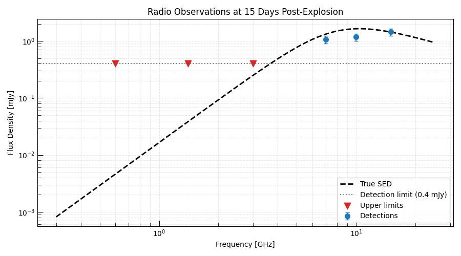
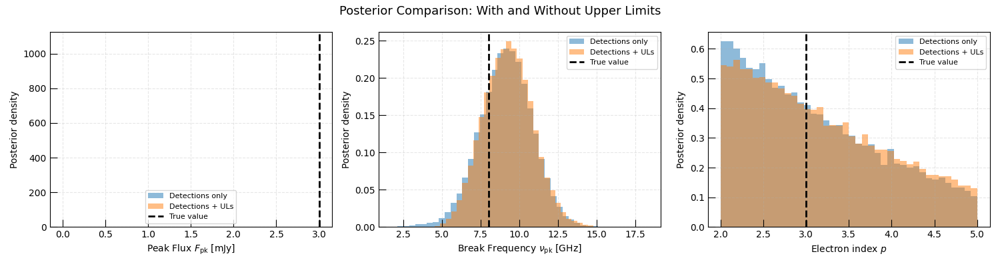
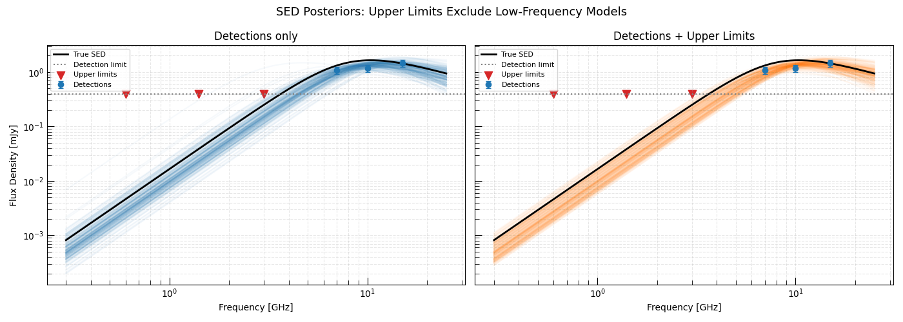

Note
Go to the end to download the full example code.
Upper Limit Constraints: Non-Detections as Information#
In radio surveys, newly discovered transients are often not detected at early times. Rather than discarding these non-detections, they can be incorporated as upper limits that constrain the parameter space just as powerfully as detections — sometimes more so.
This example demonstrates:
The astrophysical context: early radio upper limits from a supernova search constrain the CSM wind density and ejecta energy before any detection is possible.
How Trilobite handles upper limits: using
GaussianCensoredLikelihood, which implements a censored Gaussian likelihood that treats non-detections as one-sided constraints.The informational value of upper limits: by comparing posteriors with and without upper limits, we show that including the non-detections significantly tightens the constraints on physical parameters.
The Physics#
We model the radio emission using a
Synchrotron_SSA_SBPL_Model evaluated at
a single epoch. The two main parameters of interest are:
The peak flux \(F_{\rm pk}\) — a proxy for the total energy in the emitting plasma (related to \(E_{\rm ej}\) and \(\epsilon_e\)).
The break frequency \(\nu_{\rm pk}\) — related to the CSM column density (related to \(\dot{M}/v_{\rm w}\)).
Early upper limits in a low-frequency band (e.g. 1.4 GHz) directly constrain whether the source has already peaked at low frequencies, ruling out models with high CSM densities.
Relevant API#
GaussianCensoredLikelihoodRadioPhotometryEpochContainerInferenceProblemEmceeSampler
Setup#
import matplotlib.pyplot as plt
import numpy as np
from astropy import units as u
from trilobite.models.SEDs.synchrotron import Synchrotron_SSA_SBPL_Model
from trilobite.utils.plot_utils import set_plot_style
set_plot_style()
rng = np.random.default_rng(17)
Scenario: A Radio Supernova Caught at Early Times#
We imagine a scenario where a Type Ibc SN was discovered optically and radio observations began immediately. At the first epoch (15 days post-explosion) the source is detected at high frequencies but not yet at low frequencies.
True model parameters (representing a moderate CSM density):
Peak flux: 3 mJy at \(\nu_{\rm pk} = 8\) GHz
The low-frequency emission is still rising (absorbed by SSA)
sed_model = Synchrotron_SSA_SBPL_Model()
true_params = {
"norm": 3.0 * u.mJy,
"nu_break": 8.0 * u.GHz,
"p": 3.0,
"s": -1.0,
}
# Observing frequencies
# Low-frequency bands (non-detections expected): 0.6, 1.4, 3 GHz
# High-frequency bands (detections expected): 7, 10, 15 GHz
all_frequencies = u.Quantity([0.6, 1.4, 3.0, 7.0, 10.0, 15.0], u.GHz)
flux_limit = 0.4 * u.mJy # 3-sigma detection threshold
# True fluxes
true_flux = sed_model.forward_model({"frequency": all_frequencies}, true_params).flux_density
noise_frac = 0.15
noise = rng.normal(size=true_flux.size, scale=noise_frac) * true_flux
obs_flux = true_flux + noise
# Apply flux limit: detections where obs_flux > flux_limit, upper limits otherwise
is_detection = obs_flux > flux_limit
is_upper_limit = ~is_detection
print("=== Observations ===")
for f, fl, det in zip(all_frequencies, obs_flux, is_detection):
status = "DETECTED" if det else "UPPER LIMIT"
print(f" {f.to_value(u.GHz):4.1f} GHz: {fl.to_value(u.mJy):.3f} mJy [{status}]")
=== Observations ===
0.6 GHz: 0.005 mJy [UPPER LIMIT]
1.4 GHz: 0.040 mJy [UPPER LIMIT]
3.0 GHz: 0.230 mJy [UPPER LIMIT]
7.0 GHz: 1.071 mJy [DETECTED]
10.0 GHz: 1.178 mJy [DETECTED]
15.0 GHz: 1.444 mJy [DETECTED]
Visualize the Scenario#
Plot the true SED and the observations, showing which are detections and which are upper limits.
freqs_plot = np.geomspace(0.3, 25.0, 300) * u.GHz
true_curve = sed_model.forward_model({"frequency": freqs_plot}, true_params).flux_density
fig, ax = plt.subplots(figsize=(9, 5))
ax.loglog(freqs_plot.to_value(u.GHz), true_curve.to_value(u.mJy), color="black", lw=2, ls="--", label="True SED")
ax.axhline(flux_limit.to_value(u.mJy), color="gray", ls=":", lw=1.5, label=f"Detection limit ({flux_limit:.1f})")
# Detections
ax.errorbar(
all_frequencies[is_detection].to_value(u.GHz),
obs_flux[is_detection].to_value(u.mJy),
yerr=noise_frac * obs_flux[is_detection].to_value(u.mJy),
fmt="o",
color="C0",
capsize=3,
ms=7,
label="Detections",
)
# Upper limits (triangles pointing down)
ax.scatter(
all_frequencies[is_upper_limit].to_value(u.GHz),
flux_limit.to_value(u.mJy) * np.ones(is_upper_limit.sum()),
marker="v",
s=80,
color="C3",
zorder=5,
label="Upper limits",
)
ax.set_xlabel("Frequency [GHz]")
ax.set_ylabel("Flux Density [mJy]")
ax.set_title("Radio Observations at 15 Days Post-Explosion")
ax.legend()
ax.grid(True, which="both", ls="--", alpha=0.3)
plt.tight_layout()
plt.show()

Build the Two Inference Problems#
We now run two inference problems:
Detections only — uses only the detected (high-frequency) points.
Detections + upper limits — includes the low-frequency non-detections as censored data points.
By comparing the resulting posteriors, we can directly quantify the information content of the upper limits.
from astropy.table import Table
from trilobite.data import InferenceData
from trilobite.data.photometry import RadioPhotometryEpochContainer
from trilobite.inference import GaussianCensoredLikelihood
from trilobite.inference.problem import InferenceProblem
from trilobite.inference.sampling.mcmc import EmceeSampler
def _build_problem(use_upper_limits: bool):
"""Build an InferenceProblem with or without upper limits."""
if use_upper_limits:
freqs = all_frequencies
fluxes = np.where(is_detection, obs_flux.to_value(u.mJy), np.nan) * u.mJy
errs = noise_frac * np.abs(obs_flux)
errs[is_upper_limit] = flux_limit / 3.0 # small dummy error
upper_lims = np.where(is_upper_limit, flux_limit.to_value(u.mJy), np.nan) * u.mJy
else:
freqs = all_frequencies[is_detection]
fluxes = obs_flux[is_detection]
errs = noise_frac * obs_flux[is_detection]
upper_lims = np.full(is_detection.sum(), np.nan) * u.mJy
data_table = Table()
data_table["freq"] = freqs
data_table["flux_density"] = fluxes
data_table["flux_density_error"] = errs
data_table["flux_upper_limit"] = upper_lims
photometry = RadioPhotometryEpochContainer(data_table)
inference_data = InferenceData.from_table(
sed_model,
photometry.table,
variables={"frequency": "freq"},
observables={
"flux_density": ("flux_density", "flux_density_error", "flux_upper_limit", None),
},
)
likelihood = GaussianCensoredLikelihood(model=sed_model, data=inference_data)
problem = InferenceProblem(likelihood=likelihood)
problem.set_prior("norm", "uniform", lower=0.1 * u.mJy, upper=30.0 * u.mJy)
problem.set_prior("nu_break", "uniform", lower=0.5 * u.GHz, upper=50.0 * u.GHz)
problem.set_prior("p", "uniform", lower=2.0, upper=5.0)
problem.parameters["norm"].initial_value = 3.0 * u.mJy
problem.parameters["nu_break"].initial_value = 8.0 * u.GHz
problem.parameters["p"].initial_value = 3.0
problem.parameters["s"].initial_value = -1.0
problem.parameters["s"].freeze = True
return problem
# Run both inferences
print("Running inference: detections only...")
problem_det = _build_problem(use_upper_limits=False)
sampler_det = EmceeSampler(problem_det, n_walkers=32)
result_det = sampler_det.run(8_000, progress=True)
samples_det = result_det.get_flat_samples(burn=2000, thin=5)
print("Running inference: detections + upper limits...")
problem_ul = _build_problem(use_upper_limits=True)
sampler_ul = EmceeSampler(problem_ul, n_walkers=32)
result_ul = sampler_ul.run(8_000, progress=True)
samples_ul = result_ul.get_flat_samples(burn=2000, thin=5)
Running inference: detections only...
/home/runner/work/Trilobite/Trilobite/docs/source/galleries/inference/plot_upper_limit_inference.py:192: DeprecationWarning: RadioPhotometryEpochContainer is deprecated and will be removed in a future release. Use RadioPhotometryEpoch instead.
photometry = RadioPhotometryEpochContainer(data_table)
0% | | 🦖 0/8000 [00:00<?, ?it/s]
0% | | 🦖 27/8000 [00:00<00:30, 262.78it/s]
1% | | 🦖 55/8000 [00:00<00:29, 272.76it/s]
1% | | 🦖 85/8000 [00:00<00:27, 284.90it/s]
1% |▏ | 🦖 115/8000 [00:00<00:27, 289.07it/s]
2% |▏ | 🦖 146/8000 [00:00<00:26, 293.38it/s]
2% |▏ | 🦖 178/8000 [00:00<00:25, 301.65it/s]
3% |▎ | 🦖 209/8000 [00:00<00:25, 299.84it/s]
3% |▎ | 🦖 241/8000 [00:00<00:25, 303.43it/s]
3% |▎ | 🦖 272/8000 [00:00<00:25, 303.29it/s]
4% |▍ | 🦖 303/8000 [00:01<00:25, 304.25it/s]
4% |▍ | 🦖 334/8000 [00:01<00:25, 303.03it/s]
5% |▍ | 🦖 365/8000 [00:01<00:25, 303.50it/s]
5% |▍ | 🦖 396/8000 [00:01<00:25, 302.49it/s]
5% |▌ | 🦖 427/8000 [00:01<00:25, 301.02it/s]
6% |▌ | 🦖 458/8000 [00:01<00:25, 299.85it/s]
6% |▌ | 🦖 489/8000 [00:01<00:24, 301.73it/s]
6% |▋ | 🦖 520/8000 [00:01<00:24, 301.15it/s]
7% |▋ | 🦖 552/8000 [00:01<00:24, 303.86it/s]
7% |▋ | 🦖 583/8000 [00:01<00:24, 303.11it/s]
8% |▊ | 🦖 614/8000 [00:02<00:24, 302.10it/s]
8% |▊ | 🦖 645/8000 [00:02<00:24, 300.66it/s]
8% |▊ | 🦖 676/8000 [00:02<00:24, 299.68it/s]
9% |▉ | 🦖 706/8000 [00:02<00:24, 299.54it/s]
9% |▉ | 🦖 737/8000 [00:02<00:24, 300.89it/s]
10% |▉ | 🦖 768/8000 [00:02<00:23, 302.69it/s]
10% |▉ | 🦖 799/8000 [00:02<00:23, 304.61it/s]
10% |█ | 🦖 830/8000 [00:02<00:23, 305.00it/s]
11% |█ | 🦖 861/8000 [00:02<00:23, 302.91it/s]
11% |█ | 🦖 892/8000 [00:02<00:23, 303.63it/s]
12% |█▏ | 🦖 923/8000 [00:03<00:23, 301.84it/s]
12% |█▏ | 🦖 954/8000 [00:03<00:23, 299.78it/s]
12% |█▏ | 🦖 985/8000 [00:03<00:23, 300.74it/s]
13% |█▎ | 🦖 1016/8000 [00:03<00:23, 301.15it/s]
13% |█▎ | 🦖 1047/8000 [00:03<00:23, 301.60it/s]
13% |█▎ | 🦖 1078/8000 [00:03<00:23, 299.26it/s]
14% |█▍ | 🦖 1108/8000 [00:03<00:23, 297.36it/s]
14% |█▍ | 🦖 1139/8000 [00:03<00:22, 300.10it/s]
15% |█▍ | 🦖 1171/8000 [00:03<00:22, 303.56it/s]
15% |█▌ | 🦖 1202/8000 [00:04<00:22, 301.49it/s]
15% |█▌ | 🦖 1233/8000 [00:04<00:22, 302.68it/s]
16% |█▌ | 🦖 1265/8000 [00:04<00:22, 305.85it/s]
16% |█▌ | 🦖 1296/8000 [00:04<00:22, 304.72it/s]
17% |█▋ | 🦖 1327/8000 [00:04<00:21, 304.98it/s]
17% |█▋ | 🦖 1358/8000 [00:04<00:21, 305.77it/s]
17% |█▋ | 🦖 1389/8000 [00:04<00:21, 306.74it/s]
18% |█▊ | 🦖 1420/8000 [00:04<00:21, 306.00it/s]
18% |█▊ | 🦖 1451/8000 [00:04<00:21, 304.77it/s]
19% |█▊ | 🦖 1482/8000 [00:04<00:21, 304.60it/s]
19% |█▉ | 🦖 1513/8000 [00:05<00:21, 306.06it/s]
19% |█▉ | 🦖 1544/8000 [00:05<00:21, 303.43it/s]
20% |█▉ | 🦖 1575/8000 [00:05<00:21, 302.75it/s]
20% |██ | 🦖 1606/8000 [00:05<00:21, 302.34it/s]
20% |██ | 🦖 1637/8000 [00:05<00:20, 303.93it/s]
21% |██ | 🦖 1668/8000 [00:05<00:20, 304.74it/s]
21% |██ | 🦖 1699/8000 [00:05<00:20, 304.33it/s]
22% |██▏ | 🦖 1730/8000 [00:05<00:20, 304.49it/s]
22% |██▏ | 🦖 1761/8000 [00:05<00:20, 305.43it/s]
22% |██▏ | 🦖 1792/8000 [00:05<00:20, 304.02it/s]
23% |██▎ | 🦖 1823/8000 [00:06<00:20, 302.39it/s]
23% |██▎ | 🦖 1854/8000 [00:06<00:20, 300.97it/s]
24% |██▎ | 🦖 1885/8000 [00:06<00:20, 297.35it/s]
24% |██▍ | 🦖 1915/8000 [00:06<00:20, 297.73it/s]
24% |██▍ | 🦖 1946/8000 [00:06<00:20, 300.86it/s]
25% |██▍ | 🦖 1977/8000 [00:06<00:20, 300.96it/s]
25% |██▌ | 🦖 2008/8000 [00:06<00:19, 301.56it/s]
25% |██▌ | 🦖 2039/8000 [00:06<00:19, 302.65it/s]
26% |██▌ | 🦖 2070/8000 [00:06<00:19, 303.09it/s]
26% |██▋ | 🦖 2101/8000 [00:06<00:19, 302.87it/s]
27% |██▋ | 🦖 2132/8000 [00:07<00:19, 300.66it/s]
27% |██▋ | 🦖 2163/8000 [00:07<00:19, 300.55it/s]
27% |██▋ | 🦖 2194/8000 [00:07<00:19, 296.93it/s]
28% |██▊ | 🦖 2225/8000 [00:07<00:19, 299.81it/s]
28% |██▊ | 🦖 2256/8000 [00:07<00:19, 301.80it/s]
29% |██▊ | 🦖 2287/8000 [00:07<00:18, 303.66it/s]
29% |██▉ | 🦖 2318/8000 [00:07<00:18, 300.77it/s]
29% |██▉ | 🦖 2349/8000 [00:07<00:18, 301.84it/s]
30% |██▉ | 🦖 2380/8000 [00:07<00:18, 301.91it/s]
30% |███ | 🦖 2411/8000 [00:07<00:18, 302.51it/s]
31% |███ | 🦖 2442/8000 [00:08<00:18, 300.50it/s]
31% |███ | 🦖 2473/8000 [00:08<00:18, 300.12it/s]
31% |███▏ | 🦖 2504/8000 [00:08<00:18, 302.65it/s]
32% |███▏ | 🦖 2535/8000 [00:08<00:18, 299.71it/s]
32% |███▏ | 🦖 2566/8000 [00:08<00:17, 302.06it/s]
32% |███▏ | 🦖 2597/8000 [00:08<00:17, 303.79it/s]
33% |███▎ | 🦖 2628/8000 [00:08<00:17, 303.57it/s]
33% |███▎ | 🦖 2659/8000 [00:08<00:17, 303.69it/s]
34% |███▎ | 🦖 2690/8000 [00:08<00:17, 297.14it/s]
34% |███▍ | 🦖 2720/8000 [00:09<00:17, 296.40it/s]
34% |███▍ | 🦖 2751/8000 [00:09<00:17, 298.07it/s]
35% |███▍ | 🦖 2782/8000 [00:09<00:17, 299.47it/s]
35% |███▌ | 🦖 2812/8000 [00:09<00:17, 298.61it/s]
36% |███▌ | 🦖 2843/8000 [00:09<00:17, 300.84it/s]
36% |███▌ | 🦖 2874/8000 [00:09<00:17, 298.13it/s]
36% |███▋ | 🦖 2905/8000 [00:09<00:16, 300.06it/s]
37% |███▋ | 🦖 2936/8000 [00:09<00:16, 300.21it/s]
37% |███▋ | 🦖 2967/8000 [00:09<00:16, 301.67it/s]
37% |███▋ | 🦖 2998/8000 [00:09<00:16, 298.28it/s]
38% |███▊ | 🦖 3028/8000 [00:10<00:16, 298.53it/s]
38% |███▊ | 🦖 3059/8000 [00:10<00:16, 299.42it/s]
39% |███▊ | 🦖 3089/8000 [00:10<00:16, 298.69it/s]
39% |███▉ | 🦖 3119/8000 [00:10<00:16, 295.29it/s]
39% |███▉ | 🦖 3149/8000 [00:10<00:16, 295.91it/s]
40% |███▉ | 🦖 3181/8000 [00:10<00:16, 300.00it/s]
40% |████ | 🦖 3212/8000 [00:10<00:15, 300.80it/s]
41% |████ | 🦖 3244/8000 [00:10<00:15, 304.46it/s]
41% |████ | 🦖 3275/8000 [00:10<00:15, 300.56it/s]
41% |████▏ | 🦖 3306/8000 [00:10<00:15, 297.35it/s]
42% |████▏ | 🦖 3337/8000 [00:11<00:15, 299.50it/s]
42% |████▏ | 🦖 3368/8000 [00:11<00:15, 299.67it/s]
42% |████▏ | 🦖 3398/8000 [00:11<00:15, 299.04it/s]
43% |████▎ | 🦖 3428/8000 [00:11<00:15, 299.08it/s]
43% |████▎ | 🦖 3458/8000 [00:11<00:15, 298.86it/s]
44% |████▎ | 🦖 3489/8000 [00:11<00:15, 300.46it/s]
44% |████▍ | 🦖 3520/8000 [00:11<00:14, 302.53it/s]
44% |████▍ | 🦖 3551/8000 [00:11<00:14, 303.68it/s]
45% |████▍ | 🦖 3582/8000 [00:11<00:14, 301.76it/s]
45% |████▌ | 🦖 3613/8000 [00:12<00:14, 301.31it/s]
46% |████▌ | 🦖 3644/8000 [00:12<00:14, 301.88it/s]
46% |████▌ | 🦖 3675/8000 [00:12<00:14, 303.49it/s]
46% |████▋ | 🦖 3706/8000 [00:12<00:14, 303.95it/s]
47% |████▋ | 🦖 3737/8000 [00:12<00:14, 302.74it/s]
47% |████▋ | 🦖 3768/8000 [00:12<00:14, 301.73it/s]
47% |████▋ | 🦖 3799/8000 [00:12<00:13, 302.13it/s]
48% |████▊ | 🦖 3830/8000 [00:12<00:13, 302.86it/s]
48% |████▊ | 🦖 3861/8000 [00:12<00:13, 302.94it/s]
49% |████▊ | 🦖 3892/8000 [00:12<00:13, 298.81it/s]
49% |████▉ | 🦖 3923/8000 [00:13<00:13, 299.82it/s]
49% |████▉ | 🦖 3954/8000 [00:13<00:13, 301.81it/s]
50% |████▉ | 🦖 3985/8000 [00:13<00:13, 302.43it/s]
50% |█████ | 🦖 4016/8000 [00:13<00:13, 302.02it/s]
51% |█████ | 🦖 4047/8000 [00:13<00:13, 301.17it/s]
51% |█████ | 🦖 4078/8000 [00:13<00:13, 299.59it/s]
51% |█████▏ | 🦖 4109/8000 [00:13<00:12, 300.06it/s]
52% |█████▏ | 🦖 4140/8000 [00:13<00:12, 300.16it/s]
52% |█████▏ | 🦖 4172/8000 [00:13<00:12, 303.09it/s]
53% |█████▎ | 🦖 4203/8000 [00:13<00:12, 302.20it/s]
53% |█████▎ | 🦖 4234/8000 [00:14<00:12, 302.21it/s]
53% |█████▎ | 🦖 4265/8000 [00:14<00:12, 299.91it/s]
54% |█████▎ | 🦖 4296/8000 [00:14<00:12, 300.13it/s]
54% |█████▍ | 🦖 4327/8000 [00:14<00:12, 296.60it/s]
54% |█████▍ | 🦖 4359/8000 [00:14<00:12, 300.81it/s]
55% |█████▍ | 🦖 4390/8000 [00:14<00:12, 300.04it/s]
55% |█████▌ | 🦖 4421/8000 [00:14<00:11, 302.35it/s]
56% |█████▌ | 🦖 4452/8000 [00:14<00:11, 300.24it/s]
56% |█████▌ | 🦖 4483/8000 [00:14<00:11, 298.75it/s]
56% |█████▋ | 🦖 4513/8000 [00:14<00:11, 297.99it/s]
57% |█████▋ | 🦖 4544/8000 [00:15<00:11, 299.35it/s]
57% |█████▋ | 🦖 4575/8000 [00:15<00:11, 301.29it/s]
58% |█████▊ | 🦖 4606/8000 [00:15<00:11, 299.34it/s]
58% |█████▊ | 🦖 4637/8000 [00:15<00:11, 301.51it/s]
58% |█████▊ | 🦖 4668/8000 [00:15<00:11, 299.93it/s]
59% |█████▊ | 🦖 4699/8000 [00:15<00:11, 299.76it/s]
59% |█████▉ | 🦖 4729/8000 [00:15<00:10, 299.83it/s]
59% |█████▉ | 🦖 4759/8000 [00:15<00:10, 297.27it/s]
60% |█████▉ | 🦖 4790/8000 [00:15<00:10, 298.74it/s]
60% |██████ | 🦖 4820/8000 [00:16<00:10, 298.72it/s]
61% |██████ | 🦖 4852/8000 [00:16<00:10, 301.97it/s]
61% |██████ | 🦖 4883/8000 [00:16<00:10, 300.23it/s]
61% |██████▏ | 🦖 4914/8000 [00:16<00:10, 300.70it/s]
62% |██████▏ | 🦖 4945/8000 [00:16<00:10, 300.20it/s]
62% |██████▏ | 🦖 4976/8000 [00:16<00:10, 301.59it/s]
63% |██████▎ | 🦖 5007/8000 [00:16<00:09, 302.44it/s]
63% |██████▎ | 🦖 5038/8000 [00:16<00:09, 303.36it/s]
63% |██████▎ | 🦖 5069/8000 [00:16<00:09, 302.50it/s]
64% |██████▍ | 🦖 5100/8000 [00:16<00:09, 300.64it/s]
64% |██████▍ | 🦖 5131/8000 [00:17<00:09, 300.90it/s]
65% |██████▍ | 🦖 5162/8000 [00:17<00:09, 302.21it/s]
65% |██████▍ | 🦖 5194/8000 [00:17<00:09, 305.48it/s]
65% |██████▌ | 🦖 5225/8000 [00:17<00:09, 299.74it/s]
66% |██████▌ | 🦖 5255/8000 [00:17<00:09, 298.17it/s]
66% |██████▌ | 🦖 5285/8000 [00:17<00:09, 297.88it/s]
66% |██████▋ | 🦖 5315/8000 [00:17<00:09, 295.69it/s]
67% |██████▋ | 🦖 5346/8000 [00:17<00:08, 297.78it/s]
67% |██████▋ | 🦖 5377/8000 [00:17<00:08, 298.62it/s]
68% |██████▊ | 🦖 5407/8000 [00:17<00:08, 298.08it/s]
68% |██████▊ | 🦖 5437/8000 [00:18<00:08, 297.39it/s]
68% |██████▊ | 🦖 5467/8000 [00:18<00:08, 295.47it/s]
69% |██████▊ | 🦖 5498/8000 [00:18<00:08, 297.82it/s]
69% |██████▉ | 🦖 5528/8000 [00:18<00:08, 298.01it/s]
69% |██████▉ | 🦖 5559/8000 [00:18<00:08, 299.10it/s]
70% |██████▉ | 🦖 5590/8000 [00:18<00:08, 299.48it/s]
70% |███████ | 🦖 5620/8000 [00:18<00:07, 298.01it/s]
71% |███████ | 🦖 5651/8000 [00:18<00:07, 299.86it/s]
71% |███████ | 🦖 5682/8000 [00:18<00:07, 300.98it/s]
71% |███████▏ | 🦖 5713/8000 [00:18<00:07, 297.15it/s]
72% |███████▏ | 🦖 5743/8000 [00:19<00:07, 291.62it/s]
72% |███████▏ | 🦖 5773/8000 [00:19<00:07, 292.06it/s]
73% |███████▎ | 🦖 5803/8000 [00:19<00:07, 293.58it/s]
73% |███████▎ | 🦖 5833/8000 [00:19<00:07, 294.21it/s]
73% |███████▎ | 🦖 5864/8000 [00:19<00:07, 296.86it/s]
74% |███████▎ | 🦖 5894/8000 [00:19<00:07, 297.10it/s]
74% |███████▍ | 🦖 5924/8000 [00:19<00:06, 297.58it/s]
74% |███████▍ | 🦖 5955/8000 [00:19<00:06, 299.68it/s]
75% |███████▍ | 🦖 5986/8000 [00:19<00:06, 300.84it/s]
75% |███████▌ | 🦖 6017/8000 [00:20<00:06, 301.07it/s]
76% |███████▌ | 🦖 6048/8000 [00:20<00:06, 301.09it/s]
76% |███████▌ | 🦖 6079/8000 [00:20<00:06, 300.15it/s]
76% |███████▋ | 🦖 6110/8000 [00:20<00:06, 297.58it/s]
77% |███████▋ | 🦖 6140/8000 [00:20<00:06, 297.08it/s]
77% |███████▋ | 🦖 6170/8000 [00:20<00:06, 297.03it/s]
78% |███████▊ | 🦖 6200/8000 [00:20<00:06, 297.51it/s]
78% |███████▊ | 🦖 6230/8000 [00:20<00:05, 297.43it/s]
78% |███████▊ | 🦖 6260/8000 [00:20<00:05, 297.47it/s]
79% |███████▊ | 🦖 6290/8000 [00:20<00:05, 294.72it/s]
79% |███████▉ | 🦖 6321/8000 [00:21<00:05, 296.24it/s]
79% |███████▉ | 🦖 6352/8000 [00:21<00:05, 297.96it/s]
80% |███████▉ | 🦖 6382/8000 [00:21<00:05, 297.91it/s]
80% |████████ | 🦖 6412/8000 [00:21<00:05, 297.28it/s]
81% |████████ | 🦖 6443/8000 [00:21<00:05, 299.40it/s]
81% |████████ | 🦖 6474/8000 [00:21<00:05, 300.06it/s]
81% |████████▏ | 🦖 6505/8000 [00:21<00:04, 300.48it/s]
82% |████████▏ | 🦖 6536/8000 [00:21<00:04, 302.21it/s]
82% |████████▏ | 🦖 6567/8000 [00:21<00:04, 300.23it/s]
82% |████████▏ | 🦖 6598/8000 [00:21<00:04, 300.39it/s]
83% |████████▎ | 🦖 6629/8000 [00:22<00:04, 300.99it/s]
83% |████████▎ | 🦖 6660/8000 [00:22<00:04, 301.31it/s]
84% |████████▎ | 🦖 6691/8000 [00:22<00:04, 301.32it/s]
84% |████████▍ | 🦖 6722/8000 [00:22<00:04, 301.79it/s]
84% |████████▍ | 🦖 6753/8000 [00:22<00:04, 301.32it/s]
85% |████████▍ | 🦖 6784/8000 [00:22<00:04, 298.73it/s]
85% |████████▌ | 🦖 6815/8000 [00:22<00:03, 300.02it/s]
86% |████████▌ | 🦖 6846/8000 [00:22<00:03, 299.85it/s]
86% |████████▌ | 🦖 6876/8000 [00:22<00:03, 297.77it/s]
86% |████████▋ | 🦖 6906/8000 [00:22<00:03, 296.62it/s]
87% |████████▋ | 🦖 6937/8000 [00:23<00:03, 298.92it/s]
87% |████████▋ | 🦖 6968/8000 [00:23<00:03, 300.90it/s]
87% |████████▋ | 🦖 6999/8000 [00:23<00:03, 298.91it/s]
88% |████████▊ | 🦖 7030/8000 [00:23<00:03, 300.36it/s]
88% |████████▊ | 🦖 7061/8000 [00:23<00:03, 301.35it/s]
89% |████████▊ | 🦖 7092/8000 [00:23<00:03, 299.72it/s]
89% |████████▉ | 🦖 7123/8000 [00:23<00:02, 300.20it/s]
89% |████████▉ | 🦖 7154/8000 [00:23<00:02, 298.25it/s]
90% |████████▉ | 🦖 7185/8000 [00:23<00:02, 300.15it/s]
90% |█████████ | 🦖 7216/8000 [00:24<00:02, 298.16it/s]
91% |█████████ | 🦖 7247/8000 [00:24<00:02, 299.09it/s]
91% |█████████ | 🦖 7278/8000 [00:24<00:02, 300.68it/s]
91% |█████████▏| 🦖 7309/8000 [00:24<00:02, 300.10it/s]
92% |█████████▏| 🦖 7340/8000 [00:24<00:02, 300.39it/s]
92% |█████████▏| 🦖 7371/8000 [00:24<00:02, 299.84it/s]
93% |█████████▎| 🦖 7402/8000 [00:24<00:01, 302.40it/s]
93% |█████████▎| 🦖 7433/8000 [00:24<00:01, 303.75it/s]
93% |█████████▎| 🦖 7464/8000 [00:24<00:01, 305.08it/s]
94% |█████████▎| 🦖 7495/8000 [00:24<00:01, 299.46it/s]
94% |█████████▍| 🦖 7526/8000 [00:25<00:01, 300.58it/s]
94% |█████████▍| 🦖 7557/8000 [00:25<00:01, 299.37it/s]
95% |█████████▍| 🦖 7587/8000 [00:25<00:01, 298.81it/s]
95% |█████████▌| 🦖 7618/8000 [00:25<00:01, 299.09it/s]
96% |█████████▌| 🦖 7649/8000 [00:25<00:01, 301.18it/s]
96% |█████████▌| 🦖 7680/8000 [00:25<00:01, 300.09it/s]
96% |█████████▋| 🦖 7711/8000 [00:25<00:00, 298.92it/s]
97% |█████████▋| 🦖 7741/8000 [00:25<00:00, 297.44it/s]
97% |█████████▋| 🦖 7771/8000 [00:25<00:00, 297.87it/s]
98% |█████████▊| 🦖 7802/8000 [00:25<00:00, 298.85it/s]
98% |█████████▊| 🦖 7833/8000 [00:26<00:00, 300.42it/s]
98% |█████████▊| 🦖 7864/8000 [00:26<00:00, 297.89it/s]
99% |█████████▊| 🦖 7894/8000 [00:26<00:00, 296.52it/s]
99% |█████████▉| 🦖 7924/8000 [00:26<00:00, 296.25it/s]
99% |█████████▉| 🦖 7954/8000 [00:26<00:00, 297.21it/s]
100% |█████████▉| 🦖 7984/8000 [00:26<00:00, 296.89it/s]
100% |██████████| 🦖 8000/8000 [00:26<00:00, 300.19it/s]
Running inference: detections + upper limits...
0% | | 🦖 0/8000 [00:00<?, ?it/s]
0% | | 🦖 16/8000 [00:00<00:51, 154.02it/s]
0% | | 🦖 32/8000 [00:00<00:50, 156.47it/s]
1% | | 🦖 50/8000 [00:00<00:48, 164.72it/s]
1% | | 🦖 69/8000 [00:00<00:46, 171.04it/s]
1% | | 🦖 88/8000 [00:00<00:44, 176.17it/s]
1% |▏ | 🦖 107/8000 [00:00<00:44, 177.86it/s]
2% |▏ | 🦖 125/8000 [00:00<00:44, 177.82it/s]
2% |▏ | 🦖 144/8000 [00:00<00:43, 180.87it/s]
2% |▏ | 🦖 163/8000 [00:00<00:43, 181.34it/s]
2% |▏ | 🦖 182/8000 [00:01<00:43, 180.88it/s]
3% |▎ | 🦖 201/8000 [00:01<00:44, 177.21it/s]
3% |▎ | 🦖 219/8000 [00:01<00:43, 177.45it/s]
3% |▎ | 🦖 238/8000 [00:01<00:43, 178.48it/s]
3% |▎ | 🦖 256/8000 [00:01<00:43, 177.16it/s]
3% |▎ | 🦖 274/8000 [00:01<00:43, 177.13it/s]
4% |▎ | 🦖 293/8000 [00:01<00:42, 179.59it/s]
4% |▍ | 🦖 311/8000 [00:01<00:43, 176.97it/s]
4% |▍ | 🦖 329/8000 [00:01<00:43, 177.04it/s]
4% |▍ | 🦖 347/8000 [00:01<00:43, 176.36it/s]
5% |▍ | 🦖 366/8000 [00:02<00:42, 179.06it/s]
5% |▍ | 🦖 385/8000 [00:02<00:42, 180.31it/s]
5% |▌ | 🦖 404/8000 [00:02<00:41, 181.79it/s]
5% |▌ | 🦖 423/8000 [00:02<00:42, 179.31it/s]
6% |▌ | 🦖 441/8000 [00:02<00:42, 177.07it/s]
6% |▌ | 🦖 459/8000 [00:02<00:42, 177.16it/s]
6% |▌ | 🦖 477/8000 [00:02<00:42, 177.80it/s]
6% |▌ | 🦖 496/8000 [00:02<00:41, 179.88it/s]
6% |▋ | 🦖 514/8000 [00:02<00:41, 178.67it/s]
7% |▋ | 🦖 532/8000 [00:02<00:41, 178.68it/s]
7% |▋ | 🦖 551/8000 [00:03<00:41, 179.54it/s]
7% |▋ | 🦖 570/8000 [00:03<00:41, 180.61it/s]
7% |▋ | 🦖 589/8000 [00:03<00:40, 181.78it/s]
8% |▊ | 🦖 608/8000 [00:03<00:40, 183.34it/s]
8% |▊ | 🦖 627/8000 [00:03<00:41, 178.33it/s]
8% |▊ | 🦖 646/8000 [00:03<00:41, 179.17it/s]
8% |▊ | 🦖 664/8000 [00:03<00:41, 177.33it/s]
9% |▊ | 🦖 683/8000 [00:03<00:40, 178.61it/s]
9% |▉ | 🦖 702/8000 [00:03<00:40, 179.56it/s]
9% |▉ | 🦖 720/8000 [00:04<00:40, 179.12it/s]
9% |▉ | 🦖 739/8000 [00:04<00:40, 180.72it/s]
9% |▉ | 🦖 758/8000 [00:04<00:40, 181.03it/s]
10% |▉ | 🦖 777/8000 [00:04<00:39, 181.22it/s]
10% |▉ | 🦖 796/8000 [00:04<00:40, 179.98it/s]
10% |█ | 🦖 815/8000 [00:04<00:39, 180.39it/s]
10% |█ | 🦖 834/8000 [00:04<00:39, 181.65it/s]
11% |█ | 🦖 853/8000 [00:04<00:39, 179.88it/s]
11% |█ | 🦖 871/8000 [00:04<00:39, 179.76it/s]
11% |█ | 🦖 889/8000 [00:04<00:40, 176.65it/s]
11% |█▏ | 🦖 907/8000 [00:05<00:40, 175.78it/s]
12% |█▏ | 🦖 926/8000 [00:05<00:39, 178.03it/s]
12% |█▏ | 🦖 945/8000 [00:05<00:39, 179.03it/s]
12% |█▏ | 🦖 964/8000 [00:05<00:39, 179.72it/s]
12% |█▏ | 🦖 982/8000 [00:05<00:39, 178.64it/s]
12% |█▎ | 🦖 1000/8000 [00:05<00:39, 178.27it/s]
13% |█▎ | 🦖 1018/8000 [00:05<00:39, 177.33it/s]
13% |█▎ | 🦖 1037/8000 [00:05<00:38, 179.59it/s]
13% |█▎ | 🦖 1056/8000 [00:05<00:38, 180.76it/s]
13% |█▎ | 🦖 1075/8000 [00:06<00:38, 177.97it/s]
14% |█▎ | 🦖 1094/8000 [00:06<00:38, 178.68it/s]
14% |█▍ | 🦖 1113/8000 [00:06<00:38, 179.19it/s]
14% |█▍ | 🦖 1132/8000 [00:06<00:38, 180.50it/s]
14% |█▍ | 🦖 1151/8000 [00:06<00:38, 179.39it/s]
15% |█▍ | 🦖 1170/8000 [00:06<00:38, 179.44it/s]
15% |█▍ | 🦖 1188/8000 [00:06<00:38, 178.16it/s]
15% |█▌ | 🦖 1206/8000 [00:06<00:38, 177.35it/s]
15% |█▌ | 🦖 1225/8000 [00:06<00:37, 179.30it/s]
16% |█▌ | 🦖 1244/8000 [00:06<00:37, 181.69it/s]
16% |█▌ | 🦖 1263/8000 [00:07<00:36, 182.62it/s]
16% |█▌ | 🦖 1282/8000 [00:07<00:37, 181.20it/s]
16% |█▋ | 🦖 1301/8000 [00:07<00:36, 182.35it/s]
16% |█▋ | 🦖 1320/8000 [00:07<00:36, 181.24it/s]
17% |█▋ | 🦖 1339/8000 [00:07<00:37, 179.20it/s]
17% |█▋ | 🦖 1357/8000 [00:07<00:37, 177.43it/s]
17% |█▋ | 🦖 1376/8000 [00:07<00:36, 180.26it/s]
17% |█▋ | 🦖 1395/8000 [00:07<00:36, 180.51it/s]
18% |█▊ | 🦖 1414/8000 [00:07<00:36, 179.37it/s]
18% |█▊ | 🦖 1432/8000 [00:08<00:37, 177.48it/s]
18% |█▊ | 🦖 1450/8000 [00:08<00:37, 176.66it/s]
18% |█▊ | 🦖 1469/8000 [00:08<00:36, 178.16it/s]
19% |█▊ | 🦖 1488/8000 [00:08<00:35, 180.99it/s]
19% |█▉ | 🦖 1507/8000 [00:08<00:35, 180.73it/s]
19% |█▉ | 🦖 1526/8000 [00:08<00:36, 179.61it/s]
19% |█▉ | 🦖 1544/8000 [00:08<00:36, 176.95it/s]
20% |█▉ | 🦖 1562/8000 [00:08<00:36, 176.90it/s]
20% |█▉ | 🦖 1580/8000 [00:08<00:36, 175.91it/s]
20% |█▉ | 🦖 1598/8000 [00:08<00:36, 177.09it/s]
20% |██ | 🦖 1617/8000 [00:09<00:35, 178.16it/s]
20% |██ | 🦖 1636/8000 [00:09<00:35, 180.66it/s]
21% |██ | 🦖 1655/8000 [00:09<00:35, 179.25it/s]
21% |██ | 🦖 1673/8000 [00:09<00:35, 178.99it/s]
21% |██ | 🦖 1692/8000 [00:09<00:34, 180.79it/s]
21% |██▏ | 🦖 1711/8000 [00:09<00:34, 182.37it/s]
22% |██▏ | 🦖 1730/8000 [00:09<00:34, 182.18it/s]
22% |██▏ | 🦖 1749/8000 [00:09<00:34, 179.45it/s]
22% |██▏ | 🦖 1767/8000 [00:09<00:35, 176.23it/s]
22% |██▏ | 🦖 1785/8000 [00:09<00:35, 175.60it/s]
23% |██▎ | 🦖 1804/8000 [00:10<00:34, 178.36it/s]
23% |██▎ | 🦖 1823/8000 [00:10<00:34, 179.56it/s]
23% |██▎ | 🦖 1841/8000 [00:10<00:34, 177.71it/s]
23% |██▎ | 🦖 1859/8000 [00:10<00:34, 176.50it/s]
23% |██▎ | 🦖 1877/8000 [00:10<00:34, 175.96it/s]
24% |██▎ | 🦖 1895/8000 [00:10<00:34, 175.01it/s]
24% |██▍ | 🦖 1913/8000 [00:10<00:35, 173.18it/s]
24% |██▍ | 🦖 1931/8000 [00:10<00:35, 172.91it/s]
24% |██▍ | 🦖 1949/8000 [00:10<00:34, 174.23it/s]
25% |██▍ | 🦖 1967/8000 [00:11<00:34, 175.04it/s]
25% |██▍ | 🦖 1985/8000 [00:11<00:34, 175.52it/s]
25% |██▌ | 🦖 2003/8000 [00:11<00:34, 174.61it/s]
25% |██▌ | 🦖 2021/8000 [00:11<00:34, 173.52it/s]
25% |██▌ | 🦖 2039/8000 [00:11<00:34, 175.31it/s]
26% |██▌ | 🦖 2057/8000 [00:11<00:33, 176.36it/s]
26% |██▌ | 🦖 2075/8000 [00:11<00:33, 176.04it/s]
26% |██▌ | 🦖 2094/8000 [00:11<00:33, 177.50it/s]
26% |██▋ | 🦖 2112/8000 [00:11<00:33, 177.55it/s]
27% |██▋ | 🦖 2130/8000 [00:11<00:33, 176.83it/s]
27% |██▋ | 🦖 2148/8000 [00:12<00:32, 177.63it/s]
27% |██▋ | 🦖 2166/8000 [00:12<00:32, 177.71it/s]
27% |██▋ | 🦖 2184/8000 [00:12<00:32, 177.20it/s]
28% |██▊ | 🦖 2203/8000 [00:12<00:32, 178.45it/s]
28% |██▊ | 🦖 2221/8000 [00:12<00:32, 177.71it/s]
28% |██▊ | 🦖 2239/8000 [00:12<00:32, 177.25it/s]
28% |██▊ | 🦖 2257/8000 [00:12<00:32, 177.98it/s]
28% |██▊ | 🦖 2276/8000 [00:12<00:31, 179.77it/s]
29% |██▊ | 🦖 2295/8000 [00:12<00:31, 181.66it/s]
29% |██▉ | 🦖 2314/8000 [00:12<00:31, 180.01it/s]
29% |██▉ | 🦖 2333/8000 [00:13<00:31, 181.86it/s]
29% |██▉ | 🦖 2352/8000 [00:13<00:31, 180.01it/s]
30% |██▉ | 🦖 2371/8000 [00:13<00:30, 182.01it/s]
30% |██▉ | 🦖 2390/8000 [00:13<00:30, 182.51it/s]
30% |███ | 🦖 2409/8000 [00:13<00:30, 181.70it/s]
30% |███ | 🦖 2428/8000 [00:13<00:30, 181.39it/s]
31% |███ | 🦖 2447/8000 [00:13<00:31, 179.07it/s]
31% |███ | 🦖 2466/8000 [00:13<00:30, 181.57it/s]
31% |███ | 🦖 2485/8000 [00:13<00:30, 181.13it/s]
31% |███▏ | 🦖 2504/8000 [00:14<00:30, 181.43it/s]
32% |███▏ | 🦖 2523/8000 [00:14<00:30, 179.92it/s]
32% |███▏ | 🦖 2542/8000 [00:14<00:30, 178.67it/s]
32% |███▏ | 🦖 2560/8000 [00:14<00:30, 177.22it/s]
32% |███▏ | 🦖 2578/8000 [00:14<00:30, 176.74it/s]
32% |███▏ | 🦖 2596/8000 [00:14<00:30, 177.23it/s]
33% |███▎ | 🦖 2614/8000 [00:14<00:30, 175.51it/s]
33% |███▎ | 🦖 2632/8000 [00:14<00:30, 176.49it/s]
33% |███▎ | 🦖 2650/8000 [00:14<00:30, 176.01it/s]
33% |███▎ | 🦖 2669/8000 [00:14<00:30, 177.04it/s]
34% |███▎ | 🦖 2687/8000 [00:15<00:30, 176.77it/s]
34% |███▍ | 🦖 2705/8000 [00:15<00:30, 176.17it/s]
34% |███▍ | 🦖 2723/8000 [00:15<00:29, 176.38it/s]
34% |███▍ | 🦖 2742/8000 [00:15<00:29, 177.50it/s]
35% |███▍ | 🦖 2761/8000 [00:15<00:29, 178.84it/s]
35% |███▍ | 🦖 2779/8000 [00:15<00:29, 177.91it/s]
35% |███▍ | 🦖 2797/8000 [00:15<00:29, 178.27it/s]
35% |███▌ | 🦖 2816/8000 [00:15<00:28, 180.40it/s]
35% |███▌ | 🦖 2835/8000 [00:15<00:28, 180.62it/s]
36% |███▌ | 🦖 2854/8000 [00:15<00:28, 177.69it/s]
36% |███▌ | 🦖 2872/8000 [00:16<00:29, 176.80it/s]
36% |███▌ | 🦖 2891/8000 [00:16<00:28, 178.91it/s]
36% |███▋ | 🦖 2910/8000 [00:16<00:28, 179.42it/s]
37% |███▋ | 🦖 2928/8000 [00:16<00:28, 179.20it/s]
37% |███▋ | 🦖 2947/8000 [00:16<00:28, 180.34it/s]
37% |███▋ | 🦖 2966/8000 [00:16<00:28, 178.75it/s]
37% |███▋ | 🦖 2984/8000 [00:16<00:28, 177.94it/s]
38% |███▊ | 🦖 3003/8000 [00:16<00:27, 179.09it/s]
38% |███▊ | 🦖 3022/8000 [00:16<00:27, 181.03it/s]
38% |███▊ | 🦖 3041/8000 [00:17<00:27, 179.79it/s]
38% |███▊ | 🦖 3059/8000 [00:17<00:27, 179.71it/s]
38% |███▊ | 🦖 3077/8000 [00:17<00:27, 178.04it/s]
39% |███▊ | 🦖 3095/8000 [00:17<00:27, 178.50it/s]
39% |███▉ | 🦖 3113/8000 [00:17<00:27, 177.81it/s]
39% |███▉ | 🦖 3131/8000 [00:17<00:27, 178.43it/s]
39% |███▉ | 🦖 3149/8000 [00:17<00:27, 175.70it/s]
40% |███▉ | 🦖 3168/8000 [00:17<00:27, 178.16it/s]
40% |███▉ | 🦖 3186/8000 [00:17<00:26, 178.60it/s]
40% |████ | 🦖 3205/8000 [00:17<00:26, 179.32it/s]
40% |████ | 🦖 3224/8000 [00:18<00:26, 180.07it/s]
41% |████ | 🦖 3243/8000 [00:18<00:26, 181.57it/s]
41% |████ | 🦖 3262/8000 [00:18<00:26, 181.20it/s]
41% |████ | 🦖 3281/8000 [00:18<00:26, 179.67it/s]
41% |████ | 🦖 3299/8000 [00:18<00:26, 179.03it/s]
41% |████▏ | 🦖 3317/8000 [00:18<00:26, 178.14it/s]
42% |████▏ | 🦖 3336/8000 [00:18<00:25, 181.61it/s]
42% |████▏ | 🦖 3355/8000 [00:18<00:25, 180.86it/s]
42% |████▏ | 🦖 3374/8000 [00:18<00:25, 181.34it/s]
42% |████▏ | 🦖 3393/8000 [00:18<00:25, 181.37it/s]
43% |████▎ | 🦖 3412/8000 [00:19<00:25, 178.66it/s]
43% |████▎ | 🦖 3430/8000 [00:19<00:25, 177.81it/s]
43% |████▎ | 🦖 3449/8000 [00:19<00:25, 178.94it/s]
43% |████▎ | 🦖 3467/8000 [00:19<00:25, 177.48it/s]
44% |████▎ | 🦖 3486/8000 [00:19<00:25, 178.30it/s]
44% |████▍ | 🦖 3504/8000 [00:19<00:25, 176.96it/s]
44% |████▍ | 🦖 3522/8000 [00:19<00:25, 176.92it/s]
44% |████▍ | 🦖 3540/8000 [00:19<00:25, 177.71it/s]
44% |████▍ | 🦖 3558/8000 [00:19<00:24, 178.08it/s]
45% |████▍ | 🦖 3577/8000 [00:20<00:24, 178.59it/s]
45% |████▍ | 🦖 3596/8000 [00:20<00:24, 180.07it/s]
45% |████▌ | 🦖 3615/8000 [00:20<00:24, 180.02it/s]
45% |████▌ | 🦖 3634/8000 [00:20<00:24, 180.26it/s]
46% |████▌ | 🦖 3653/8000 [00:20<00:24, 178.45it/s]
46% |████▌ | 🦖 3672/8000 [00:20<00:23, 180.54it/s]
46% |████▌ | 🦖 3691/8000 [00:20<00:23, 180.35it/s]
46% |████▋ | 🦖 3710/8000 [00:20<00:23, 179.01it/s]
47% |████▋ | 🦖 3728/8000 [00:20<00:24, 177.76it/s]
47% |████▋ | 🦖 3746/8000 [00:20<00:23, 177.26it/s]
47% |████▋ | 🦖 3764/8000 [00:21<00:23, 177.08it/s]
47% |████▋ | 🦖 3783/8000 [00:21<00:23, 178.32it/s]
48% |████▊ | 🦖 3801/8000 [00:21<00:23, 176.77it/s]
48% |████▊ | 🦖 3819/8000 [00:21<00:23, 176.36it/s]
48% |████▊ | 🦖 3837/8000 [00:21<00:23, 176.50it/s]
48% |████▊ | 🦖 3856/8000 [00:21<00:23, 177.66it/s]
48% |████▊ | 🦖 3874/8000 [00:21<00:23, 178.10it/s]
49% |████▊ | 🦖 3893/8000 [00:21<00:22, 178.73it/s]
49% |████▉ | 🦖 3912/8000 [00:21<00:22, 180.70it/s]
49% |████▉ | 🦖 3931/8000 [00:22<00:22, 180.49it/s]
49% |████▉ | 🦖 3950/8000 [00:22<00:22, 179.61it/s]
50% |████▉ | 🦖 3969/8000 [00:22<00:22, 180.12it/s]
50% |████▉ | 🦖 3988/8000 [00:22<00:22, 180.67it/s]
50% |█████ | 🦖 4007/8000 [00:22<00:22, 181.13it/s]
50% |█████ | 🦖 4026/8000 [00:22<00:21, 180.84it/s]
51% |█████ | 🦖 4045/8000 [00:22<00:22, 178.83it/s]
51% |█████ | 🦖 4063/8000 [00:22<00:22, 178.88it/s]
51% |█████ | 🦖 4081/8000 [00:22<00:22, 176.97it/s]
51% |█████▏ | 🦖 4100/8000 [00:22<00:21, 178.48it/s]
51% |█████▏ | 🦖 4119/8000 [00:23<00:21, 181.72it/s]
52% |█████▏ | 🦖 4138/8000 [00:23<00:21, 181.56it/s]
52% |█████▏ | 🦖 4157/8000 [00:23<00:21, 180.26it/s]
52% |█████▏ | 🦖 4176/8000 [00:23<00:21, 177.87it/s]
52% |█████▏ | 🦖 4194/8000 [00:23<00:21, 177.26it/s]
53% |█████▎ | 🦖 4212/8000 [00:23<00:21, 176.15it/s]
53% |█████▎ | 🦖 4230/8000 [00:23<00:21, 175.71it/s]
53% |█████▎ | 🦖 4248/8000 [00:23<00:21, 176.03it/s]
53% |█████▎ | 🦖 4266/8000 [00:23<00:21, 175.24it/s]
54% |█████▎ | 🦖 4284/8000 [00:23<00:21, 175.99it/s]
54% |█████▍ | 🦖 4302/8000 [00:24<00:20, 176.68it/s]
54% |█████▍ | 🦖 4320/8000 [00:24<00:20, 175.24it/s]
54% |█████▍ | 🦖 4339/8000 [00:24<00:20, 177.77it/s]
54% |█████▍ | 🦖 4357/8000 [00:24<00:20, 177.02it/s]
55% |█████▍ | 🦖 4376/8000 [00:24<00:20, 178.21it/s]
55% |█████▍ | 🦖 4395/8000 [00:24<00:20, 179.05it/s]
55% |█████▌ | 🦖 4413/8000 [00:24<00:20, 177.75it/s]
55% |█████▌ | 🦖 4432/8000 [00:24<00:19, 178.40it/s]
56% |█████▌ | 🦖 4451/8000 [00:24<00:19, 179.40it/s]
56% |█████▌ | 🦖 4469/8000 [00:25<00:19, 178.11it/s]
56% |█████▌ | 🦖 4488/8000 [00:25<00:19, 178.64it/s]
56% |█████▋ | 🦖 4506/8000 [00:25<00:19, 178.86it/s]
57% |█████▋ | 🦖 4525/8000 [00:25<00:19, 180.60it/s]
57% |█████▋ | 🦖 4544/8000 [00:25<00:19, 180.52it/s]
57% |█████▋ | 🦖 4563/8000 [00:25<00:19, 179.59it/s]
57% |█████▋ | 🦖 4582/8000 [00:25<00:18, 180.76it/s]
58% |█████▊ | 🦖 4601/8000 [00:25<00:18, 180.23it/s]
58% |█████▊ | 🦖 4620/8000 [00:25<00:18, 180.62it/s]
58% |█████▊ | 🦖 4639/8000 [00:25<00:19, 176.43it/s]
58% |█████▊ | 🦖 4657/8000 [00:26<00:18, 176.55it/s]
58% |█████▊ | 🦖 4676/8000 [00:26<00:18, 178.83it/s]
59% |█████▊ | 🦖 4694/8000 [00:26<00:18, 178.30it/s]
59% |█████▉ | 🦖 4712/8000 [00:26<00:18, 178.62it/s]
59% |█████▉ | 🦖 4731/8000 [00:26<00:18, 180.88it/s]
59% |█████▉ | 🦖 4750/8000 [00:26<00:17, 182.00it/s]
60% |█████▉ | 🦖 4769/8000 [00:26<00:17, 182.62it/s]
60% |█████▉ | 🦖 4788/8000 [00:26<00:17, 181.64it/s]
60% |██████ | 🦖 4807/8000 [00:26<00:17, 180.04it/s]
60% |██████ | 🦖 4826/8000 [00:27<00:17, 178.91it/s]
61% |██████ | 🦖 4845/8000 [00:27<00:17, 180.53it/s]
61% |██████ | 🦖 4864/8000 [00:27<00:17, 177.76it/s]
61% |██████ | 🦖 4882/8000 [00:27<00:17, 177.90it/s]
61% |██████▏ | 🦖 4900/8000 [00:27<00:17, 177.54it/s]
61% |██████▏ | 🦖 4919/8000 [00:27<00:17, 179.34it/s]
62% |██████▏ | 🦖 4937/8000 [00:27<00:17, 178.70it/s]
62% |██████▏ | 🦖 4955/8000 [00:27<00:17, 177.14it/s]
62% |██████▏ | 🦖 4974/8000 [00:27<00:16, 178.89it/s]
62% |██████▏ | 🦖 4992/8000 [00:27<00:16, 178.05it/s]
63% |██████▎ | 🦖 5010/8000 [00:28<00:16, 178.32it/s]
63% |██████▎ | 🦖 5028/8000 [00:28<00:16, 177.24it/s]
63% |██████▎ | 🦖 5046/8000 [00:28<00:16, 176.34it/s]
63% |██████▎ | 🦖 5064/8000 [00:28<00:16, 174.93it/s]
64% |██████▎ | 🦖 5082/8000 [00:28<00:16, 174.01it/s]
64% |██████▍ | 🦖 5100/8000 [00:28<00:16, 174.85it/s]
64% |██████▍ | 🦖 5118/8000 [00:28<00:16, 174.00it/s]
64% |██████▍ | 🦖 5136/8000 [00:28<00:16, 174.32it/s]
64% |██████▍ | 🦖 5155/8000 [00:28<00:16, 177.16it/s]
65% |██████▍ | 🦖 5173/8000 [00:28<00:15, 177.77it/s]
65% |██████▍ | 🦖 5191/8000 [00:29<00:15, 177.39it/s]
65% |██████▌ | 🦖 5209/8000 [00:29<00:15, 175.93it/s]
65% |██████▌ | 🦖 5228/8000 [00:29<00:15, 177.90it/s]
66% |██████▌ | 🦖 5248/8000 [00:29<00:15, 182.32it/s]
66% |██████▌ | 🦖 5267/8000 [00:29<00:15, 181.92it/s]
66% |██████▌ | 🦖 5286/8000 [00:29<00:14, 184.22it/s]
66% |██████▋ | 🦖 5305/8000 [00:29<00:14, 182.64it/s]
67% |██████▋ | 🦖 5324/8000 [00:29<00:14, 181.81it/s]
67% |██████▋ | 🦖 5343/8000 [00:29<00:14, 183.31it/s]
67% |██████▋ | 🦖 5362/8000 [00:30<00:14, 180.49it/s]
67% |██████▋ | 🦖 5381/8000 [00:30<00:14, 180.69it/s]
68% |██████▊ | 🦖 5400/8000 [00:30<00:14, 181.11it/s]
68% |██████▊ | 🦖 5419/8000 [00:30<00:14, 179.57it/s]
68% |██████▊ | 🦖 5437/8000 [00:30<00:14, 179.04it/s]
68% |██████▊ | 🦖 5455/8000 [00:30<00:14, 178.41it/s]
68% |██████▊ | 🦖 5473/8000 [00:30<00:14, 178.02it/s]
69% |██████▊ | 🦖 5492/8000 [00:30<00:13, 180.87it/s]
69% |██████▉ | 🦖 5511/8000 [00:30<00:13, 181.30it/s]
69% |██████▉ | 🦖 5530/8000 [00:30<00:13, 178.94it/s]
69% |██████▉ | 🦖 5549/8000 [00:31<00:13, 180.59it/s]
70% |██████▉ | 🦖 5568/8000 [00:31<00:13, 178.44it/s]
70% |██████▉ | 🦖 5586/8000 [00:31<00:13, 177.09it/s]
70% |███████ | 🦖 5604/8000 [00:31<00:13, 175.82it/s]
70% |███████ | 🦖 5622/8000 [00:31<00:13, 176.34it/s]
70% |███████ | 🦖 5640/8000 [00:31<00:13, 177.32it/s]
71% |███████ | 🦖 5658/8000 [00:31<00:13, 176.51it/s]
71% |███████ | 🦖 5676/8000 [00:31<00:13, 176.42it/s]
71% |███████ | 🦖 5695/8000 [00:31<00:12, 179.18it/s]
71% |███████▏ | 🦖 5713/8000 [00:31<00:12, 178.97it/s]
72% |███████▏ | 🦖 5731/8000 [00:32<00:12, 177.94it/s]
72% |███████▏ | 🦖 5750/8000 [00:32<00:12, 178.66it/s]
72% |███████▏ | 🦖 5768/8000 [00:32<00:12, 178.34it/s]
72% |███████▏ | 🦖 5787/8000 [00:32<00:12, 179.33it/s]
73% |███████▎ | 🦖 5805/8000 [00:32<00:12, 179.06it/s]
73% |███████▎ | 🦖 5824/8000 [00:32<00:12, 180.26it/s]
73% |███████▎ | 🦖 5843/8000 [00:32<00:11, 180.24it/s]
73% |███████▎ | 🦖 5862/8000 [00:32<00:11, 182.38it/s]
74% |███████▎ | 🦖 5881/8000 [00:32<00:11, 181.99it/s]
74% |███████▍ | 🦖 5900/8000 [00:33<00:11, 181.23it/s]
74% |███████▍ | 🦖 5919/8000 [00:33<00:11, 180.73it/s]
74% |███████▍ | 🦖 5938/8000 [00:33<00:11, 180.79it/s]
74% |███████▍ | 🦖 5957/8000 [00:33<00:11, 181.04it/s]
75% |███████▍ | 🦖 5976/8000 [00:33<00:11, 181.11it/s]
75% |███████▍ | 🦖 5995/8000 [00:33<00:11, 179.51it/s]
75% |███████▌ | 🦖 6014/8000 [00:33<00:11, 180.49it/s]
75% |███████▌ | 🦖 6033/8000 [00:33<00:11, 175.91it/s]
76% |███████▌ | 🦖 6052/8000 [00:33<00:10, 179.04it/s]
76% |███████▌ | 🦖 6071/8000 [00:33<00:10, 179.27it/s]
76% |███████▌ | 🦖 6089/8000 [00:34<00:10, 178.27it/s]
76% |███████▋ | 🦖 6107/8000 [00:34<00:10, 177.54it/s]
77% |███████▋ | 🦖 6125/8000 [00:34<00:10, 176.75it/s]
77% |███████▋ | 🦖 6143/8000 [00:34<00:10, 175.37it/s]
77% |███████▋ | 🦖 6161/8000 [00:34<00:10, 175.58it/s]
77% |███████▋ | 🦖 6179/8000 [00:34<00:10, 174.62it/s]
77% |███████▋ | 🦖 6197/8000 [00:34<00:10, 175.16it/s]
78% |███████▊ | 🦖 6216/8000 [00:34<00:10, 177.99it/s]
78% |███████▊ | 🦖 6235/8000 [00:34<00:09, 179.33it/s]
78% |███████▊ | 🦖 6254/8000 [00:35<00:09, 181.11it/s]
78% |███████▊ | 🦖 6273/8000 [00:35<00:09, 179.30it/s]
79% |███████▊ | 🦖 6291/8000 [00:35<00:09, 179.18it/s]
79% |███████▉ | 🦖 6310/8000 [00:35<00:09, 180.79it/s]
79% |███████▉ | 🦖 6329/8000 [00:35<00:09, 182.09it/s]
79% |███████▉ | 🦖 6348/8000 [00:35<00:09, 181.34it/s]
80% |███████▉ | 🦖 6367/8000 [00:35<00:09, 180.27it/s]
80% |███████▉ | 🦖 6386/8000 [00:35<00:08, 182.02it/s]
80% |████████ | 🦖 6405/8000 [00:35<00:08, 180.76it/s]
80% |████████ | 🦖 6424/8000 [00:35<00:08, 179.87it/s]
81% |████████ | 🦖 6442/8000 [00:36<00:08, 178.41it/s]
81% |████████ | 🦖 6461/8000 [00:36<00:08, 178.95it/s]
81% |████████ | 🦖 6479/8000 [00:36<00:08, 176.37it/s]
81% |████████ | 🦖 6497/8000 [00:36<00:08, 174.00it/s]
81% |████████▏ | 🦖 6516/8000 [00:36<00:08, 176.44it/s]
82% |████████▏ | 🦖 6535/8000 [00:36<00:08, 177.48it/s]
82% |████████▏ | 🦖 6554/8000 [00:36<00:08, 179.40it/s]
82% |████████▏ | 🦖 6573/8000 [00:36<00:07, 180.93it/s]
82% |████████▏ | 🦖 6592/8000 [00:36<00:07, 180.35it/s]
83% |████████▎ | 🦖 6611/8000 [00:37<00:07, 180.56it/s]
83% |████████▎ | 🦖 6630/8000 [00:37<00:07, 181.95it/s]
83% |████████▎ | 🦖 6649/8000 [00:37<00:07, 178.23it/s]
83% |████████▎ | 🦖 6667/8000 [00:37<00:07, 175.29it/s]
84% |████████▎ | 🦖 6685/8000 [00:37<00:07, 176.20it/s]
84% |████████▍ | 🦖 6704/8000 [00:37<00:07, 178.43it/s]
84% |████████▍ | 🦖 6723/8000 [00:37<00:07, 180.30it/s]
84% |████████▍ | 🦖 6742/8000 [00:37<00:06, 180.27it/s]
85% |████████▍ | 🦖 6761/8000 [00:37<00:06, 179.67it/s]
85% |████████▍ | 🦖 6779/8000 [00:37<00:06, 179.40it/s]
85% |████████▍ | 🦖 6797/8000 [00:38<00:06, 179.16it/s]
85% |████████▌ | 🦖 6815/8000 [00:38<00:06, 179.10it/s]
85% |████████▌ | 🦖 6833/8000 [00:38<00:06, 179.07it/s]
86% |████████▌ | 🦖 6851/8000 [00:38<00:06, 178.70it/s]
86% |████████▌ | 🦖 6869/8000 [00:38<00:06, 179.01it/s]
86% |████████▌ | 🦖 6887/8000 [00:38<00:06, 177.08it/s]
86% |████████▋ | 🦖 6905/8000 [00:38<00:06, 176.27it/s]
87% |████████▋ | 🦖 6924/8000 [00:38<00:06, 177.58it/s]
87% |████████▋ | 🦖 6943/8000 [00:38<00:05, 179.96it/s]
87% |████████▋ | 🦖 6961/8000 [00:38<00:05, 179.94it/s]
87% |████████▋ | 🦖 6980/8000 [00:39<00:05, 179.91it/s]
87% |████████▋ | 🦖 6999/8000 [00:39<00:05, 179.83it/s]
88% |████████▊ | 🦖 7018/8000 [00:39<00:05, 180.07it/s]
88% |████████▊ | 🦖 7038/8000 [00:39<00:05, 183.96it/s]
88% |████████▊ | 🦖 7057/8000 [00:39<00:05, 184.07it/s]
88% |████████▊ | 🦖 7076/8000 [00:39<00:05, 183.60it/s]
89% |████████▊ | 🦖 7095/8000 [00:39<00:04, 181.37it/s]
89% |████████▉ | 🦖 7114/8000 [00:39<00:04, 182.03it/s]
89% |████████▉ | 🦖 7133/8000 [00:39<00:04, 181.33it/s]
89% |████████▉ | 🦖 7152/8000 [00:40<00:04, 180.15it/s]
90% |████████▉ | 🦖 7171/8000 [00:40<00:04, 182.14it/s]
90% |████████▉ | 🦖 7190/8000 [00:40<00:04, 180.70it/s]
90% |█████████ | 🦖 7209/8000 [00:40<00:04, 181.68it/s]
90% |█████████ | 🦖 7228/8000 [00:40<00:04, 181.49it/s]
91% |█████████ | 🦖 7247/8000 [00:40<00:04, 181.12it/s]
91% |█████████ | 🦖 7266/8000 [00:40<00:04, 182.82it/s]
91% |█████████ | 🦖 7285/8000 [00:40<00:03, 181.81it/s]
91% |█████████▏| 🦖 7304/8000 [00:40<00:03, 179.25it/s]
92% |█████████▏| 🦖 7322/8000 [00:40<00:03, 178.47it/s]
92% |█████████▏| 🦖 7341/8000 [00:41<00:03, 180.98it/s]
92% |█████████▏| 🦖 7360/8000 [00:41<00:03, 182.34it/s]
92% |█████████▏| 🦖 7379/8000 [00:41<00:03, 181.61it/s]
92% |█████████▏| 🦖 7398/8000 [00:41<00:03, 181.94it/s]
93% |█████████▎| 🦖 7417/8000 [00:41<00:03, 180.69it/s]
93% |█████████▎| 🦖 7436/8000 [00:41<00:03, 177.62it/s]
93% |█████████▎| 🦖 7454/8000 [00:41<00:03, 176.11it/s]
93% |█████████▎| 🦖 7472/8000 [00:41<00:02, 176.37it/s]
94% |█████████▎| 🦖 7490/8000 [00:41<00:02, 175.30it/s]
94% |█████████▍| 🦖 7508/8000 [00:41<00:02, 175.87it/s]
94% |█████████▍| 🦖 7527/8000 [00:42<00:02, 177.60it/s]
94% |█████████▍| 🦖 7545/8000 [00:42<00:02, 177.05it/s]
95% |█████████▍| 🦖 7563/8000 [00:42<00:02, 177.39it/s]
95% |█████████▍| 🦖 7582/8000 [00:42<00:02, 178.15it/s]
95% |█████████▌| 🦖 7600/8000 [00:42<00:02, 177.32it/s]
95% |█████████▌| 🦖 7618/8000 [00:42<00:02, 177.18it/s]
95% |█████████▌| 🦖 7636/8000 [00:42<00:02, 175.19it/s]
96% |█████████▌| 🦖 7654/8000 [00:42<00:01, 176.05it/s]
96% |█████████▌| 🦖 7672/8000 [00:42<00:01, 175.75it/s]
96% |█████████▌| 🦖 7691/8000 [00:43<00:01, 177.58it/s]
96% |█████████▋| 🦖 7710/8000 [00:43<00:01, 179.09it/s]
97% |█████████▋| 🦖 7729/8000 [00:43<00:01, 179.38it/s]
97% |█████████▋| 🦖 7747/8000 [00:43<00:01, 178.32it/s]
97% |█████████▋| 🦖 7766/8000 [00:43<00:01, 179.50it/s]
97% |█████████▋| 🦖 7784/8000 [00:43<00:01, 179.43it/s]
98% |█████████▊| 🦖 7802/8000 [00:43<00:01, 179.19it/s]
98% |█████████▊| 🦖 7820/8000 [00:43<00:01, 176.87it/s]
98% |█████████▊| 🦖 7838/8000 [00:43<00:00, 177.47it/s]
98% |█████████▊| 🦖 7857/8000 [00:43<00:00, 178.85it/s]
98% |█████████▊| 🦖 7876/8000 [00:44<00:00, 180.62it/s]
99% |█████████▊| 🦖 7895/8000 [00:44<00:00, 181.79it/s]
99% |█████████▉| 🦖 7914/8000 [00:44<00:00, 180.63it/s]
99% |█████████▉| 🦖 7933/8000 [00:44<00:00, 180.08it/s]
99% |█████████▉| 🦖 7953/8000 [00:44<00:00, 183.39it/s]
100% |█████████▉| 🦖 7972/8000 [00:44<00:00, 183.72it/s]
100% |█████████▉| 🦖 7991/8000 [00:44<00:00, 182.97it/s]
100% |██████████| 🦖 8000/8000 [00:44<00:00, 178.80it/s]
Compare the Posteriors#
We compare the marginal posteriors on the two key parameters: peak normalization (related to CSM density) and break frequency.
param_names = [p for p, par in problem_ul.parameters.items() if not par.freeze]
fig, axes = plt.subplots(1, len(param_names), figsize=(5 * len(param_names), 4))
param_labels = {
"norm": r"Peak Flux $F_{\rm pk}$ [mJy]",
"nu_break": r"Break Frequency $\nu_{\rm pk}$ [GHz]",
"p": r"Electron index $p$",
}
true_vals = {
"norm": true_params["norm"].to_value(u.mJy),
"nu_break": true_params["nu_break"].to_value(u.GHz),
"p": true_params["p"],
}
for ax, name in zip(axes, param_names):
col = param_names.index(name)
s_det = samples_det[:, col]
s_ul = samples_ul[:, col]
ax.hist(s_det, bins=40, alpha=0.5, color="C0", density=True, label="Detections only")
ax.hist(s_ul, bins=40, alpha=0.5, color="C1", density=True, label="Detections + ULs")
ax.axvline(true_vals[name], color="black", lw=2, ls="--", label="True value")
ax.set_xlabel(param_labels.get(name, name))
ax.set_ylabel("Posterior density")
ax.legend(fontsize=8)
ax.grid(True, ls="--", alpha=0.3)
plt.suptitle("Posterior Comparison: With and Without Upper Limits", fontsize=13)
plt.tight_layout()
plt.show()

Quantify the Improvement#
Compute the 68% credible interval width for each parameter in both runs. A narrower interval means tighter constraints.
print("\n=== Posterior 68% credible interval widths ===")
print(f"{'Parameter':<20} {'Det only':>12} {'Det + ULs':>12} {'Improvement':>14}")
print("-" * 65)
for name in param_names:
col = param_names.index(name)
s_det = samples_det[:, col]
s_ul = samples_ul[:, col]
w_det = np.percentile(s_det, 84) - np.percentile(s_det, 16)
w_ul = np.percentile(s_ul, 84) - np.percentile(s_ul, 16)
improvement = (w_det - w_ul) / w_det * 100
print(f" {name:<18} {w_det:>12.3g} {w_ul:>12.3g} {improvement:>12.1f}%")
=== Posterior 68% credible interval widths ===
Parameter Det only Det + ULs Improvement
-----------------------------------------------------------------
norm 0.000745 0.000738 0.8%
nu_break 3.33 3.17 4.7%
p 1.77 1.8 -1.9%
Posterior SED Envelopes#
Finally, plot the posterior SED envelopes from both runs to visually confirm that the upper limits exclude SEDs with peaks below the detection threshold at low frequencies.
fig, axes = plt.subplots(1, 2, figsize=(14, 5), sharey=True)
for ax, (samples, problem, label, color) in zip(
axes,
[
(samples_det, problem_det, "Detections only", "C0"),
(samples_ul, problem_ul, "Detections + Upper Limits", "C1"),
],
):
idx = rng.choice(samples.shape[0], 200, replace=False)
for i in idx:
params = problem.unpack_free_parameters(samples[i])
flux = sed_model.forward_model({"frequency": freqs_plot}, params).flux_density
ax.plot(freqs_plot.to_value(u.GHz), flux.to_value(u.mJy), color=color, alpha=0.04)
ax.loglog(freqs_plot.to_value(u.GHz), true_curve.to_value(u.mJy), color="black", lw=2, label="True SED")
ax.axhline(flux_limit.to_value(u.mJy), color="gray", ls=":", label="Detection limit")
ax.errorbar(
all_frequencies[is_detection].to_value(u.GHz),
obs_flux[is_detection].to_value(u.mJy),
yerr=noise_frac * obs_flux[is_detection].to_value(u.mJy),
fmt="o",
color="C0",
capsize=3,
label="Detections",
)
ax.scatter(
all_frequencies[is_upper_limit].to_value(u.GHz),
flux_limit.to_value(u.mJy) * np.ones(is_upper_limit.sum()),
marker="v",
s=80,
color="C3",
label="Upper limits",
)
ax.set_xlabel("Frequency [GHz]")
ax.set_title(label)
ax.legend(fontsize=8)
ax.grid(True, which="both", ls="--", alpha=0.3)
axes[0].set_ylabel("Flux Density [mJy]")
plt.suptitle("SED Posteriors: Upper Limits Exclude Low-Frequency Models", fontsize=13)
plt.tight_layout()
plt.show()

The comparison shows clearly that including upper limits removes SED solutions that would place the spectral peak at low frequency (high CSM column density), ruling out models where the absorption turnover sits well below 3 GHz at this epoch. This is the key information content of early radio non-detections.
Total running time of the script: (1 minutes 13.264 seconds)